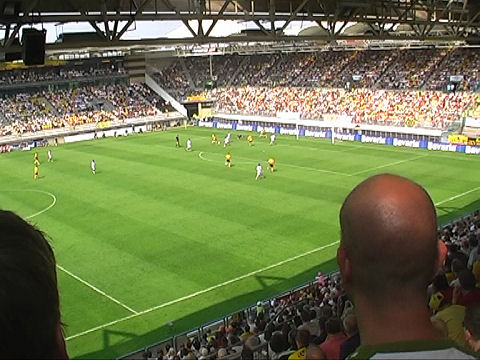
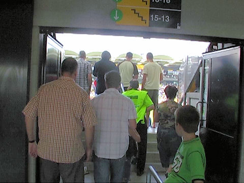

Toch nog ruim honderd Heracles-supporters.
Blije gasten in Z16.
Sfeeractie op West: passie, trots, trouw. En dat voor 17.000 mensen op een
zeer zonnige zondag in het zuiden!
SC Heracles moet al in de 7e minuut wisselen: Klavan eruit voor de niet geheel
fitte
Bosnar.
Meeuwis brengt de bal naar de op dat moment op rechts vrijstaande Oper. De Est
ontdoet zich simpel van zijn verdediger en drukt af...
1-0: Oper, (13').
Prima sfeer in het stadion op de dag waarop er veelvuldig gekeken werd naar de
tussenstanden elders!
Roda met de schrik vrij als deze bal door Meeuwis van de doellijn wordt gekopt.
Met de schrik vrij, dus ;-).

Uit een assist van Agustien volgt een streep van Cisse: 2-0, (41').
Het blijft vreemd om te zien hoe spelers plegen te paren na een doelpunt...

Bijna tijd, dus snel naar de bierpomp (duurt bij Roda al gauw 20 minuten eer je
wat
krijgt) en wat gebeurt er dan?
3-0: eigen doelpunt Bosnar, (45'+2').
Foto: SV Online
Het bier was niet aan te slepen vandaag.
Agustien gaat hier de bal over doelman Pasveer koppen.
4-0: (53').
Agustien speelt Vandamme perfect aan die op zijn beurt perfect inschiet: 5-0,
(56').
De wave gaat voor het eerst sinds lange tijd weer door het stadion.
Schitterend schot van Bodor met links: 6-0, (56'). Het publiek wil er nu "tien".
Terwijl via het videoscherm de meest waanzinnige tussenstanden doorsijpelen in
een krankzinnig competitieslot wordt er een drinkpauze ingelast vanwege het niet
minder spectaculaire april-weer, (geen neerslag en extreem warm).
Vrije trap Heracles. Het schot gaat net over het doel.
In de 86e min. promoveert Oper zich definitief tot topscorer van Roda: 7-0.
Foto: SV Online

Het tenenkrommende "Hinsetzen".
Deze jonge supporter heeft het afscheidsboeket van Kujovic gevangen.
Na de wedstrijd was er een feestelijke afsluiting op het buitenterrein.
Qua weer en gezelligheid leek het wel de jaarlijkse Open Dag.
Samen plassen....
Geen geld om een shirt te kopen... dan maar op de blote rug!
Twee knappe zangeressen mengen zich in het publiek.